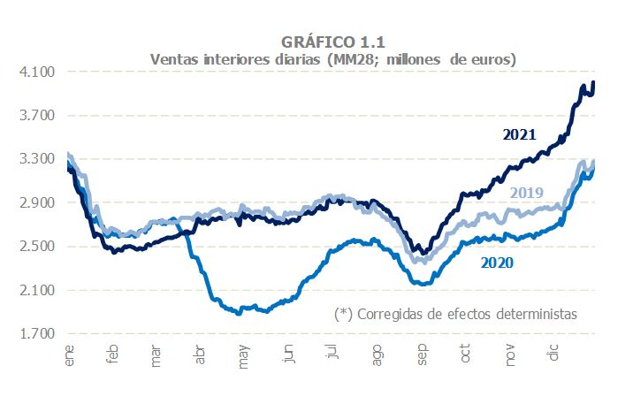

Exemple 1: Imatges decoratives
Les imatges decoratives no han de ser anunciades pels lectors de pantalla. Això es pot aconseguir amb alt="".
 Crocus bulbs
Crocus bulbs
<a href="crocuspage.html">
<img src="../../img/crocus.jpg" alt="" />
<strong>Crocus bulbs</strong>
</a>
Exemple 2: Imatges amb text alternatiu
Les imatges que transmeten informació han de tenir un text alternatiu descriptiu.
<img src="https://via.placeholder.com/300x200?text=Gràfica+de+vendes" alt="Gràfica de vendes del 2025 que mostra un augment del 20% respecte al 2024." />Exemple 3: Icones sense descripció
Les icones decoratives han de ser ignorades pels lectors de pantalla utilitzant aria-hidden="true". Aquí formen part d'una targeta informativa.
Producte ecològic
Aquest producte està fet amb materials 100% reciclats.
<div class="info-card">
<i class="fas fa-leaf" aria-hidden="true"></i>
<div>
<h3>Producte ecològic</h3>
<p>Aquest producte està fet amb materials 100% reciclats.</p>
</div>
</div>Exemple 5: Botons amb icones
Els botons amb icones han de tenir una descripció clara utilitzant aria-label. Les icones internes han de tenir aria-hidden="true".
<button class="btn" aria-label="Anterior"><i class="fas fa-arrow-left" aria-hidden="true"></i></button>
<button class="btn" aria-label="Següent"><i class="fas fa-arrow-right" aria-hidden="true"></i></button>Exemple 6: Botons amb icones i text
Els botons amb icones poden incloure text visible per millorar l'accessibilitat. Les icones internes han de tenir aria-hidden="true".
<button class="btn icon-btn">
<i class="fas fa-arrow-left" aria-hidden="true"></i>
<span>Anterior</span>
</button>
<button class="btn icon-btn">
<i class="fas fa-arrow-right" aria-hidden="true"></i>
<span>Següent</span>
</button>Icones de xarxes socials amb alt o aria-label
Les icones de xarxes socials són funcionals (fan d'enllaç) i tenen una descripció accessible amb aria-label al contenidor. Les icones internes porten aria-hidden="true" per evitar redundància.
Alternativament, si s'utilitza una imatge, cal posar alt="Nom xarxa" a la imatge.
<a href="https://twitter.com" aria-label="Twitter">
<i class="fab fa-twitter" aria-hidden="true"></i>
</a>
<a href="https://facebook.com" aria-label="Facebook">
<i class="fab fa-facebook" aria-hidden="true"></i>
</a>
<a href="https://instagram.com" aria-label="Instagram">
<i class="fab fa-instagram" aria-hidden="true"></i>
</a>
Les icones de xarxes socials són funcionals (fan d'enllaç) i tenen una descripció accessible amb aria-label al contenidor. Les icones internes porten aria-hidden="true" per evitar redundància.
Alternativament, si s'utilitza una imatge, cal posar alt="Nom xarxa" a la imatge.
<a href="https://twitter.com" aria-label="Twitter">
<i class="fab fa-twitter" aria-hidden="true"></i>
</a>
<a href="https://facebook.com" aria-label="Facebook">
<i class="fab fa-facebook" aria-hidden="true"></i>
</a>
<a href="https://instagram.com" aria-label="Instagram">
<i class="fab fa-instagram" aria-hidden="true"></i>
</a>